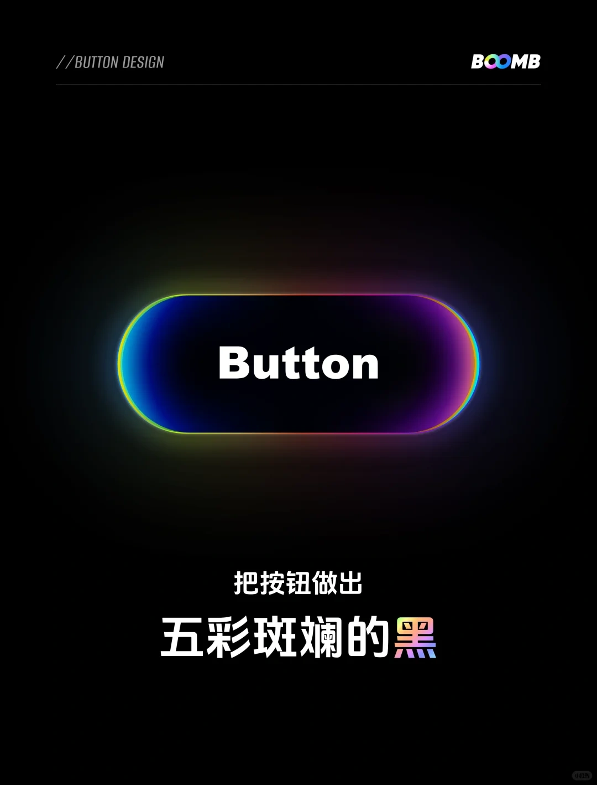

2026-01-05 HTML/CSS HTML5语义化标签实战：提升SEO与页面可读性 告别滥用div标签的时代，详细讲解header、main、article等语义化标签的使用场景， 以及如何通过语义化优化页面结构和搜索引擎收录效果。 阅读更多
2026-01-03 CSS3 CSS Flex布局完全指南：解决90%的布局难题 从基础属性到实战案例，全面掌握Flex弹性布局，告别浮动布局的兼容性问题， 快速实现居中、等分、自适应等常见布局需求。 阅读更多
 2026-01-01 UI设计 UI设计实战：从原型图到前端像素级还原 新手也能学会的UI还原技巧，讲解如何分析设计稿的尺寸、颜色、间距， 用CSS实现精准的视觉还原，让静态页面1:1匹配设计效果。 阅读更多